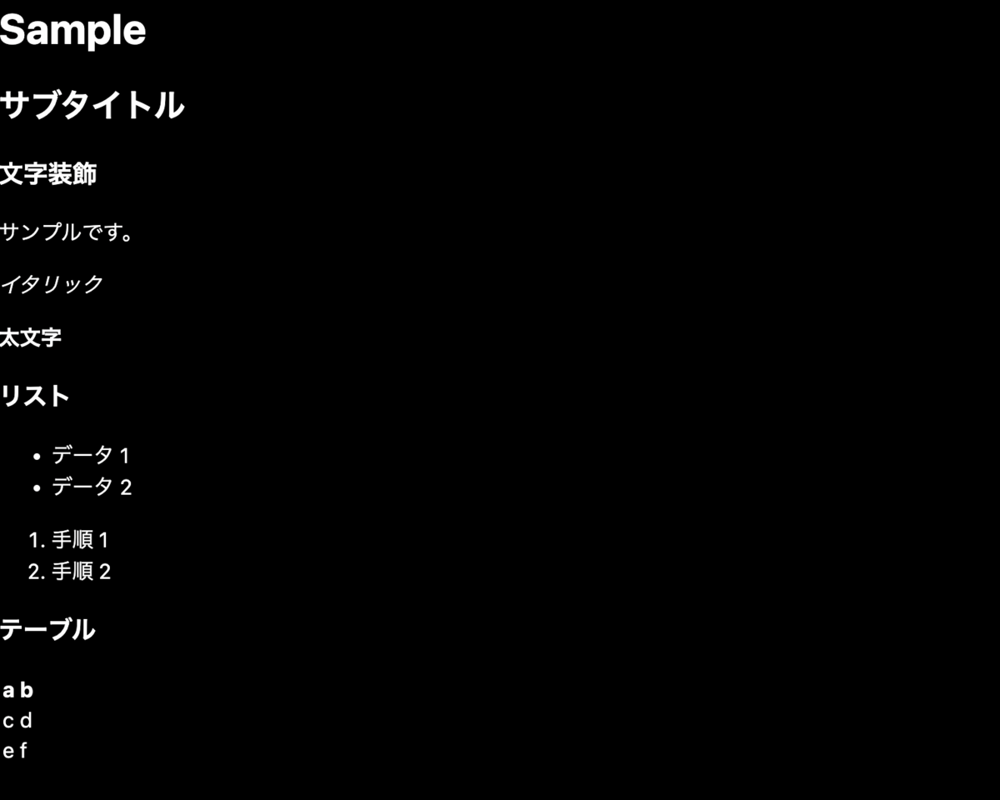

※ https://yushi-dev.hatenablog.com/entry/2023/02/19/231829 の転載です。
自作ブログを作っています。
https://yushi-dev.hatenablog.com/archive/category/%E8%87%AA%E4%BD%9C%E3%83%96%E3%83%AD%E3%82%B0
技術スタック
- TypeScript
- React
- Next.js
- Styled Components
- GitHub Pages
remark の導入
Next.js の公式ドキュメントでは、Markdown を render する仕組みとしてremarkを紹介しています。
今回はこちらを利用します。
npm i remark remark-html remark-gfm
remark-gfm は、テーブルなどいくつかの拡張的な記述方法のためのプラグインです。
Markdown ファイルの parser
ファイルの読み込みと、markdown を html に parse する仕組みを合わせた utility を用意します。
// markdown-utils.ts
import fs from 'fs'
import { remark } from 'remark'
import remarkGfm from 'remark-gfm'
import html from 'remark-html'
export async function convertToHtml(md: string) {
const result = await remark().use(html).use(remarkGfm).process(md)
return result.toString()
}
export async function loadFile(filePath: string) {
const contents = await convertToHtml(
fs.readFileSync(filePath, { encoding: 'utf8' })
)
return { contents }
}
Markdown の色々な記述方法を含むサンプルファイルを用意します。
(sample.md)
# Sample
## サブタイトル
### 文字装飾
サンプルです。
_イタリック_
**太文字**
### リスト
- データ 1
- データ 2
1. 手順 1
2. 手順 2
### テーブル
| a | b |
| --- | --- |
| c | d |
| e | f |
これを、/posts に配置します。
上記の/posts 以下のファイルを読み込むためのメソッドを用意します。
先ほど作ったmarkdown-utils.tsを利用しています。
// post-service.ts
import path from 'path'
import * as markdownUtils from '@/utils/markdown-utils'
export async function loadMarkdown(slug: string) {
const postDir = path.join(process.cwd(), 'posts')
const fullPath = path.join(postDir, `${slug}.md`)
return markdownUtils.loadFile(fullPath)
}
最後に、pages 以下に先程用意した sample.md に対応するページを表示するためのファイルを用意します。
// sample.tsx
import * as postService from '@/services/post-service'
export async function getStaticProps() {
const postData = await postService.loadMarkdown('sample')
return {
props: {
contents: postData.contents,
},
}
}
const Slug = ({ contents }) => {
return (
<>
<div dangerouslySetInnerHTML={{ __html: contents }} />
</>
)
}
export default Slug
スクリーンショット
画面が表示できるようになりました。
Markdown の各記述がうまく parse されています。

Pull Request
https://github.com/nek0meshi/blog/pull/3
あとがき
最近はハリポタを読んでいます。学生時代ぶりです。とても面白いです。